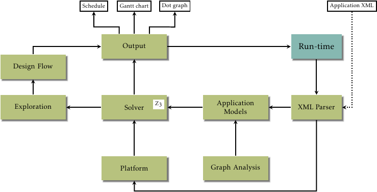

StreamExplorer is framework designed to experiment with SDF (synchronous dataflow) graphs.
It also has support for task graphs.
It solves the mapping and scheduling problem by using SMT solver.
It can also perform design-space exploration for mapping and scheduling, and many other problems.
It is also possible to support other scheduling techniques. One such technique implemented is List Scheduling.
We already have performed with experiments with different hardware platforms such as Tilera TILE-64, Kalray MPPA-256.
The structure of the StreamExplorer is as follows :

It consists of different modules and is tightly integrated with Z3 SMT solver.
- Application models : Builds a model of application graph with actors, channels, ports etc.
- Platform : Hardware model containing information about the hardware parameters
- XML Parser : Parses XML files and build application model or hardware model
- Solver : Number of solvers for different problems like scheduling, mapping, partitioning etc.
- Output : Generate Dot Graphs, Gantt charts, schedules etc.
- Exploration : Design space exploration for different problems
- Design Flow : A three-step approach for mapping and scheduling applications on distributed memory processors.
- Run-time : C++ code running on hardware platform to execute schedules produced by the StreamExplorer